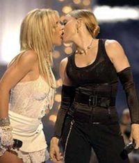
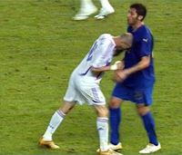

Britney Spears
 De: La Frikipedia, la enciclopedia extremadamente seria.
De: La Frikipedia, la enciclopedia extremadamente seria.
| De la serie cantantes del mundo:
|
| Britney Spears
|
|
|
| Nombre completo
|
Britney Jean Spears
|
| Estilo musical
|
Porno-pop, Playback
|
| Millones de fans
|
Todos los que no superan su adolescencia
|
| ¿Toca algún instrumento?
|
Discos de playback y sombrillas para atacar a la gente
|
| ¿Desafina?
|
Solo cuando intenta cantar en vivo
|
| Popularidad
|
Es particularmente conocida en centros de rehabilitación, manicomios, sets de películas porno, peluquerías y MTV
|
| Se dió a conocer con
|
Competir con Liz Taylor por el mayor número de matrimonios, raparse la cabeza, mostrar sus intimidades al bajarse de los autos, usar pelucas de mala calidad, atacar a los paparazzi con sombrillas, salir gorda y drogada en los MTV y un enoooorme etcétera!
|
| Nacionalidad
|
Gringa
|
| Raza
|
Blanca tirando a androide
|
| Productora
|
Playboy
|
| Notas
|
|
«Oh yeah! Oh yes! Oh yeah! Oh yes! Oooohh!»
~ Britney Spears cantando.
«¡Dame! ¡Dame! ¡Dame! ¡Dame, dame más! ¡Dame! ¡Dame!¡Dame! ¡Dame, dame más!»
~ Britney Spears con su canción más profunda.
« You better work bitch!»
~ Britney Spears cantando con autotune.
Britney Jean Spears (a.k.a. Pigney Spears, Britney Sperra, Bitchney Esputa, Britni Espirs, Shitney Spirs). Perra nacida en Kentucky (Kentucky Fried Chicken), Louisiana el 2 de diciembre de 1981. Es una Drogadicta, alcohólica, calva, gorda, cantante de playback y auto-tune, bailarina exótica y actriz estadounidense.
Se crió en Kentwood, un pueblo muy religioso del estado de Louisiana cercano a la ciudad de Nueva Orleans que una vez al año saca un disco recopilatorio con el mejor dance llamado Kentwood Compilation. Britney se convirtió en un fenómeno musical a finales de la década de los 90s y principios del tercer milenio en el mundo musical. Volvió a ser un fenómeno a mediados de la decada del 2000, pero ahora por sus escándalos y borracheras.
Con once años de trayectoria artística ha sido una de las cantantes femeninas que mayor número de ventas de álbumes ha registrado en los últimos años, las pruebas están en los millones de discos que su madre compró y guarda en el ático de su casa. También se le considera uno de los cajeros automáticos mas factibles para los hombres.
Su camino a la fama
 Madonna dándole lo suyo a Britney (o viceversa).
Desde muy temprana edad mostro sus dotes zorrísticas artisticas en las reuniones familares donde bailaba y cantaba (intentaba) canciones sugestivas y sexosas como "Like A Virgin" o "I Touch Myself" logrando un consenso general de erecciones por parte de todos lo varones que se encontraran en dichas orgías (tíos, primos, abuelos, de su propio padre y hasta de su madre quien es hermafrodita).
Desde entonces las violaciones hacia Britney se hacían cada vez mas frecuentes hasta que se detuvieron a la edad de 4 años cuando dejaron de ser violaciones debido a que esta megaputa le agarro el gusto a que le sacaran el lodo.
A la edad de 5 años se compro lo que ella considera el mejor articulo de todos, un Vibrador-Microfono, aunque cuenta ella misma en su autobiografía no autorizada "Britney: Por detrás es mejor" que el primero de estos artefactos que compro no le duro ni un día debido a que era tanta su urgencia por cantar y follarse ella misma que canto con el extremo que era vibrador y se metió la parte de micrófono, descomponiendolo al instante debido a las sustancias, líquidos y fluidos radioactivos.
Años más tarde se dio a conocer como un miembro de El Nuevo Show de Mickey Mouse en 1991 a la edad de 11 años (lo que le provoco un trauma), donde conoció a Putina Aguiperra, cuentan las mala lenguas que Putina gritaba para espantar a los clientes de Shitney, la muy puta los quería todos para ella. Es por eso que tuvo muchos problemas desde su coparticipación en la orgía de Disney Paris.
Su historial discográfico está comprendido por cinco álbumes de estudio y dos recopilatorios, que hasta la fecha han sido certificados en varias partes del mundo con discos de Platino, oro, cobre,sadomasoquismo, sexo y drogas.
En todo el mundo de acuerdo a TIME ha vendido más de 100 millones de álbumes contando 99 millones que sirvieron como material de reciclaje. Eventualmente, las ventas en los Estados Unidos superan el millón de copias certificadas por la "Asociación de Afinadores de Piano de Springfield", la mayoría de las cuales se encuentra en manos de su madre. La suma de las no certificadas o piratas duplican esta cantidad.
Problemas en su carrera

Britney cuando confundió el cáncer con el alcoholismo.
- A mediados del 2006 fué vista calva por las calles, ya que confundió el cáncer con el alcoholismo, que fue lo que el psicologo le diagnostico. Lo peor es que se rapo ella misma, no sabía que con el cáncer el pelo se cae solo. Al parecer estaba sufriendo un episodio de esfínter errante el que le hacía pasar horribles y bochornosos momentos frente a sus fans al no poder controlar sus pestilentes ventosidades anales y vaginales. Fue por esto que decidió raparse el cráneo, para así poder distraer la atención de sus sonoras manifestaciones culeras.
- Según un artículo de "The Sun" de noviembre del 2006 una de estas ventosidades produjo una perdida de cordura a la joven empresaria. Diversas fuentes informativas han expuesto que en varias ocasiones "El alegre petisú de Lousiana" afirmó sentirse abrumada por su enfermedad anal. Incluso se ha dicho que entre lagrimas y gemidos a confesado oír voces del más allá salir de entre sus piernas y de la zona de la cola.
- Después de raparse la cabeza perdió el poco talento que tenía (sí, igual que Sansón solo que en versión moderna y zorra loca bipolar). Entonces decidió que quería recobrar la atención de los paparazzi a como de lugar y empezó a atacarlos con sombrillas. Finalmente logró esas primeras planas que no recibía desde 2004.
- Lynne Spears, madre de la criatura y abuela de los dos hijos bastardos de esta, ha afirmado que pretende sacar tajada de este episodio traumático. Según el representante de uno de los bebés (el mayor) éste también pretende conseguir algo de dinero con la publicación de su primer libro "El crepúsculo de la vanidad", Un thiller erótico festivo cargado de vivencias reales y personajes en búsqueda de un motivo por el que seguir vivos. "He sufrido mucho" dice el bebé escondiendo sus ojos bajo unas gafas negras de Gucci. "He visto a mi madre calva. Ya no la volveré a ver con los mismos ojos".
- Por su parte, el productor musical Timbaland ha afirmado que ha preparado dos canciones para el album de regreso de la diva, que ha calificado como "Regulero pero funkie".
- Su nueva línea de ropa "Lady foca", colección destinada a chicas gordas pero dinámicas, (que a pesar de su grosor siguen siendo audaces y eróticas al igual que nuestra superestrella
porno), chicas con forma de ser fresca y sobaco de aroma ácido ha sido un éxito en ventas en todas las cadenas de supermercado de su ciudad, osea 2.
 Al quedar calva, Britney descargo toda su ira contra el jugador italiano Marco
Materazzi.
Actualmente
- Actualmente Britny a vuelto a ser una calienta braguetas pro-lesbi, se dedica a cantar que hace un trío, que su chico es mujeriego (es gay) o que quiere tirarse a una tal Amy Winehouse....
- Además tiene 2 hijos engendrados al cepillarse Kevin Fedex al que mantiene con millones de euros al año gracias a la maravillosa justicia de USA.
- En 2011 va a lanzar su nuevo disco y recientemente lanzó
su mierda al aire otra vez su sencillo "Manténgalo en mi concha contra", el cual fue un total fracaso éxito en muchos países.
Álbumes
En su carrera existen muchos éxitos, pero lo que muchos no saben es que se basan en ella misma (aunque ella ni escriba la letra, de hecho, dudamos que sepa escribir). Aquí los analizaremos:
¡
Coño!... lo que hace el matrimonio.
Fuck ...Me One More Time (1998)
Álbum debut de la "diva" fue lanzado en el ultimo cuarto de 1998 (es como cuando te comes una pizza pero te queda la última parte) involucra a diferentes productores(de escándalos)que le ayudaron a convertirse en el mayor éxito de plástico de la historia. En el freezbee CD, la entonces joven artista proyectaba una imagen virginal aunque ya se había prostituido a medio Kentucky y la totalidad de los ejecutivos de Disney Channel.
El álbum fue un éxito en toda Springfield, Ciudad Gótica, Metrópolis, la tierra media, Narnia, Madonnalandia, fue número uno en su casa y fue catalogado por los críticos como muy bueno (el culo de Sperra). El disco recibió quintuple aluminio y rompió récords en todas las discotiendas piratas de Ciudad de México, siendo 15 veces disco de tomate y 10 veces disco de plástico.
Sencillos del álbum:
- "Fuck me... One More Time" (Fóllame... Una vez más), dedicada a su primo menor, a quien violaba repetidamente para saciar su incontenible apetito sexual... a los 12 años.
- "Somethimes I Need Hard Sex" (A veces necesito sexo duro), escrita cuando descubrió los placeres del sexo y se sentía insatisfecha con la posición del misionero.
- "(In the Future I will be a) Crazy" (-En el futuro será una- Loca), Britney presagiando su futuro.
- "Porn to Make you Happy" (Porno para hacerte feliz), escrita tras ser rechazada por varios de sus novios que solo aceptaban acostarse con ella si veían una peli cachonda.
- "From the Bottom of my Broken Pussy" (Desde el fondo de mi vagina rota), dedicada a Justin Timberlake después de mentirle con que le había quitado la virginidad.
Oops... I Did It Again! (2000)
Segundo álbum de la cantante, es casi lo mismo que el primero solo que aún menos original, sin embargo tras acostarse con ellos, fue elogiado por los críticos de el periódico The Madagascar Times y The Narnia Post. Recibió fuertes descargas digitales y fue triple aluminio en 4 países incluyendo la Antartida, Checoslovaquia, la Atlantida, entre otros.
Sencillos del Album:
- "Oops! I did it Again!" (Mierda... Lo hice otra Vez!). Aun no sabemos si se refería a su segundo matrimonio o segundo hijo, pero no importa por que termino divorciada y sin la custodia de sus hijos. Existe la hipotesis de que se pudo referir a que la canción suena igual a "Fuck me One More Time", solo que la canta al revés y tu como
no entiendes inglés no te diste cuenta.
El video fue rodado en Marte y algunas escenas en Venus, esto hizo creer aún más que Britni nació en ese lugar.
la canción recibió numerosas nominaciones a diferentes premios: Madagascar Choice Awards, MTV video Atlantida Awards y estuvo nominada a 15 premios a canción menos original.
La canción fue un éxito en el Ipod de tu hermanita menor donde sonaba cada 10 minutos y registro ventas superiores a tres copias en el polo norte cada día durante 1 mes.
¡
Coño!... la imagen lo dice todo.
- "Lucky" (Suertuda). Se refiere a lo suertuda que es de ser la perra del pop, porque no batallaba para conseguir sexo. La canción es un poco infantil, pero lo hizo para llegar a un público más joven, la canción cuenta con la producción de alguien que no se como se llama. La primera vez que
hizo play-back la cantó en riguroso directo, declaró al término de la misma: Todos los tontos tienen suerte! (la verdad más grande que ha salido de esa boca)
- "Fuck me Stronger" (Fóllame más fuerte). Debido a sus tendencias sadomasoquistas y su insaciable apetito sexual que Kevin Fedeline no saciaba, escribió esta canción mientras era torturada, fue la canción más escuchada durante un año en Japón, Australia, la Antartida, la tierra media, Narnia y por ella misma.
- "Don't let me be the Last to Know" (No me dejes ser la última en saber que me pusiste los cachos). Canción bastante aburrida y de contenido inidentificado, no fue un éxito en ningún lugar y en un esfuerzo por hacerla mejor su video rompió con la imagen virginal de la Spears.
Bitchney (2001)
La creatividad de la artista estaba siendo atacada por sus amigos imaginarios, como no tuvo nombre para él álbum le puso el nombre que encontró bajo la foto de una señora rubia con pinta de prostituta que se encontró en una revista, meses después descubriría que se trataba de ella misma.
El álbum es un hito revelador en la carrera de Spears ya que muestra que de verdad es una gran puta cantante y no una puta cantante cualquiera.
Gracias a que nuevamente se casó/acostó con ellos, el álbum fue recibido bien por los críticos y vendio una que otra copia logrando un doble tomate en varios países.
los sencillos fueron:
- "I'm a slave for you" (Soy tu perra). ¿Hace falta decir más? Creo que el titulo se explica por sí mismo. La canción es cantada en voz baja para que no se entienda bien y no se note su pésima voz. El video la muestra muy provocativa en un edificio que ella se imagino. El tema fue un éxito en algunos países desaparecidos, excepto en la Antartida donde los pingüinos descubrieron que bailar como Britney era muy difícil para ellos, desde entonces admiran a Shakira.
- "I am not a Girl, not yet a Woman" (Ya no soy una mocosa, tampoco me convirtieron en mujer). Habla de su perdida de la virginidad a escasa edad, diciéndole a su mamá que ya la habían convertido en mujer
zuela. Ya que había perdido parte importante de sus admiradores, saca una nueva canción que es un éxito en... ningún lugar.
- "Overprotected" (Sobre protegida). Nos menciona que aunque uso condón, quedo preñada.
- "I Love Rock & Roll" (Amo la roca y la rueda). Canción que se pirateó seguro también fue para llenar el álbum. Aunque algunos afirman que era para el soundtrack de su película (si no haz escuchado sobre ella no te preocupes, es un capítulo que hasta la historia del cine flopero intenta olvidar)
- "Anticipating" (anticipándose). Relata como sus ex se le anticiparon en buscar mejores abogados que ella cuando supieron que se iban a divorciar (o sea, el día después de la boda) y así poderle sacar mucho dinero.
- "Boys" (Chicos). Nos da a entender que su adicción al sexo empozo en la
infancia adolescencia. es otra canción pirateada y para rellenar el álbum.
In my Zone (2003)
Tras los sencillos tan plásticos de su ultimo trabajo, decidió darse un tiempo para hacer... "música".
El álbum contó con canciones importantes que le dieron mas popularidad en su vecindario, el titulo nace cuando se da cuenta de que en su entrepierna hay algo extraño, que decide llamar su zona.
El álbum fue un éxito porque allí salía Madonna, siendo triple tomate, triple cobre, doble aluminio y cuatruple plástico.
Los sencillos fueron:
- "Me Against Madonna" (Yo Vs Madonna). Es con la canción con la cual se acostó con Madonna, así que no tiene mucho sentido, también relata que ella quiere ser la reina del pop(o) y para ello tiene que vencer a Madonna. La canción es bastante ridícula muestra a Britney bailando como una stripper profesional y a Madonna restregandose contra una pared un columpio y cuatro viejos la pusieron de primer sencillo quien sabe porqué.
- "Toxic" (Toxica). Habla de cada sustancia que entra en su cuerpo, es su mayor exito hasta la fecha, tiene una lirica bastante intensa (algo nada común en sus canciones) y un ritmo que se pirateo de James Bond.
Esta canción contó con un recibimiento sumamente bueno por la prensa, que la califico de muy buena (no se sabe si a la canción o a Britney, porque en el video se ve... mmm... muy profesional).
La canción fue un éxito comercial en todos los países de Oceanía y en 3 de los estados más importantes de Estados Unidos (Nebrasca, Wyoming y Dakota del Norte), le devolvió su popularidad en la Antartida, fue un hit en el polo norte, Madagascar, la Atlantida, Narnia, la fabrica de chocolates de Charly y una vez más, en su casa.
El video la muestra como una sexy azafata que en sus ganas de sexo es capaz de acostarse hasta con un gordito en el baño de un avión al que le hace la cirujia con la mano y robarle una llave. Luego se le muestra como una ladrona pelirroja en Francia donde demuestra que es capaz de manejar moto, de saltar y dar piruetas mientras grita demostrando su gran capacidad para producir un orgasmo gran sonido vocal, finalmente a Britney se le corre el tinte para cabello y queda pelinegra, donde es una vampiresa, (se supone que era Gatubela, pero... haciendo un ensayo se le daño el vestido), luego de matar y violar a un tipo, Britney vuelve a ser azafata, a medida que transcurre el video se muestra que Britney es daltonica al confundir sus pelucas y también se muestra como es capaz de ponerse un vestido de baño transparente (recuerda que es daltonica) y mostrarlo todo.
- "Everytime" (Cuando quieras). Canción para pedirle disculpas por ser tan puta a su ex Justino.
- "Outrageous" (Indignante). Durante la grabación del video Paris Hilton le rompio una pierna y por eso se suspendio el video y el lanzamiento de otros dos sencillos programados: "The Touch of my Hand" donde habla de la masturbación cuando nadie se quiere acostar con ella y "Breathe on me" que cuenta de como se quiere sentir asediada por varios al tiempo ademas de exclamar lo mucho que quiere practicar sexo oral.
Remixes y Copilatorios
Un día ella estaba aburrida y estaba corta de dinero, entonces saco unos álbumes donde ponía las misma porquerías canciones de siempre, grabó tres videos por compromiso y se fue a una isla con su nuevo marido, no se sabe cual porque hemos perdido la línea cronológica de la lista de sus cónyugues.
Los sencillos:
- "My prerogative" (Mi prerrogativa). Su prerrogativa es que va a tomar lo que quiera, cuando quiera y con quien quiera, pero ironicamente se casa por enésima vez con un tío.
- "Do something" (Haz
me algo). Se dedica a calentar más bragueras, como hace siempre.
- "Someday (I will Understand)". Aprovechó el bombo que le hizo el marido pa grabar un video.
Blackout (2007)
Durante el último año la vida de Britney había estado muy mal y amenazaron con despedirla, ella sacó otro álbum lleno de canciones sexuales, pero que a los críticos les gustaron mucho. El título fue escogido por una vidente jamaiquina con la que Britney también se casó en Las Vegas y se divorció al día siguiente, quien aseguraba que este sería el último trabajo importante de Spears antes de caer en el olvido, y de que sus hijos la empezaran a llamar zorra.
El álbum fue número uno en su casa y su mamá lo compro 1 millón de veces para que su hija no perdiera el trabajo.
Los sencillos fueron:
- "Gimme more" (Dame más). No sabemos si se refería a más comida, más sexo o drogas y alcohol, de todas maneras no importa porque ya estaba gorda, ya era zorra, drogadicta y alcoholica. En todo caso la canción tenía un ritmo pegajoso según las bailarinas nudistas que lo convirtieron en su himno de trabajo, y el video fue bastante flojo. La canción fue número uno en varios países que dejaron de existir después de comprarlo.
- "Piece of me"(Pedazo de mi). Se muestra como una diva, su popular moño mal echo se apodera de todo el video, aparece con varias bailarinas borrachas que hacen que parezca que Britni baila mejor. Ademas le da pedazos de sus extensiones a los paparazzis.
- "Break The Ice"(Romper el hielo) Rompe el hielo bebe, para echarle al cóctel de narcóticos, el video fue en muñequitos ya que ella estaba demasiado "cansada" para hacerlo. En la canción Britney creyó que si incluía sonidos de ópera, iba a llegar a públicos más ilustres y cultos como la Frikipedia, pero lo único que logró es que triunfara en Colombia, un país que no le da dinero.
(My life is a) Circus (2008)
Circo es su sexto álbum desde el primero, osea el número 6, en este ella declara que es una zoofílica criatura de circo, algo así como la mujer barbuda,para nuestra profunda decepción fue otro trabajo lleno de canciones sexuales, que gustaron a los críticos, pero todo sabemos ya como Bitchney consigue esas criticas. El álbum sale a la venta el 2 de diciembre de 2008 y en su primera semana alcanza la exhorbitate suma de 50 copias vendidas, rompiendo el récord de su anterior disco.
Sencillos:
- "Womanizer" (mujeriego). La cantante se da cuenta de que toda la vida le han puesto los cachos y decide vengarse de quien sabe quien (nadie sabe quien es su pareja). Es su mayor éxito desde Baby Fuck me One more Time y ha sido aceptada gracias a su música pegajosa.
el video la muestra re-sepsi, desnuda cachonda en un sauna, luego como secretaria cachonda, después como chofer, cachonda otra vez y de nuevo como mesera cachonda.
De nuevo hace de mesera de prostíbulo porque esta buscando de nuevo trabajo en algún protíbulo restaurante (por lo que sale su número al final del video, lo cual deja claro que quiere coger le falta imaginación y hace lo mismo que en su video de "Lucky").
- "Circus" (Circo). Pues aunque todo el mundo pensó que esta canción seria sobre como es y sobre como escapo del circo de los paparazi no fue para nada el estilo.
Fue otra de sus canciones mas profundas, escrito por ella misma Producida por el famosisimo Dr. Luke Skywalker y Benni Blanco Nieves.
El video como era de suponerse fue un total circo en toda la extensión de la palabra, donde uso el mismo director de películas porno que ya la había filmado en "I'm a Whore for you" y a Paris Hilton en "One Night on Paris"
La canción se encuentra subiendo en las listas de popularidad cada vez que "Womanizer" cae al olvido.
- "If U Suck Amy" (Si te follaste a Amy) (para los analfabetos de poco coheficiencia intelectual) la canción es promiscua y lesbica con un titulo implicito que hace referencia a F.U.C.K. me (SE O JE E me).
Con esta canción demuestra que aun es un juguete sexual que solo quiere sexo con mujeres y quiere polémica para poder vender su "Circo".
Fue producida por el mismo pervertido que produjo "Fuck Me One More time".
Se espera que el video sea religioso, con mensajes positivos sobre castidad y pureza antes del matrimonio, con la misma Britney Spears cocida la conchavirgen.
- Fuckear. Canción plástica y tonta, el típico relleno presente en todos sus discos, la diferencia es que este a falta de creatividad fue relleno en dos de sus discos. Es una vergüenza ya que fue top ten en... ningún lugar y Número uno en Name-Kuse-In.
Femme Fatale (2011)
Femme Fatale (Mujer Fatal) es el puto y cansino séptimo álbum de Britney Spears. Según el diccionario (algo que ella no sabe lo que es) Femme Fatale (Mujer Fatal) significa una mujer que atrapa a todos los hombres que ella quiere cuando quiera.
Sencillos.
- Hold It Against Me (Manténlo en mi concha). Quiere explicar que quiere tener un vibrador mantenido sobre ella osea sobre su vagina y que lo conseguirá. El videoclip no tiene nada de especial igual de calientes que los demás.
- Till the World Ends (Hasta el Fin del Mundo) Con esta canción confirma lo que la humanidad entera temía: hará playback hasta el fin del mundo.
- I Wanna Go Brothel (Quiero Ir Al Prostíbulo). Aquí dice que quiere ir al prostibulo y que quiere exibirse allí
- Criminal (Criminal). Acá dice que es una ratera de conciertos (playback), cosa que todos sabíamos.
Pigney Jean (2013)
Este álbum de la pelona es el mayor flop, se veía venir desde su 1ºer single "Fuck Bitch" y su segundo "Flopfume", Britney ha decidido hacer este "álbum" porque quiere enseñar su lado más... interior (dentro de sus lorzas), pero se ha convertido en un flop superando a "Floptus" de Pigtina Aguicerda.
Película
Sí, aunque no lo creas Britney tiene una película llamada "Crossroads". Pero es tan mala que ni en el cable la quieren repetir y por eso nadie la recuerda bien como para hacer una sinópsis, pero conociendo a Brit seguro hay sexo y playback de por medio.
¿Sabias que...?
- ... Britney cree que 2 y 2 son washington y que la capital de U.S.A. es 4?
- ... 2 y 2 son Washington?
- ... y que la capital de U.S.A. es 4?
- ... Qué aun así sigue siendo la Princesa del Pop?! (Diox nos libre).
- ... Lo que lleva en la cabeza no son extensiones, es pelo de caballo quemado?
- ... Tiene la concha más grande del espectáculo?
- ... El video de Fuck me One more Time es el más porno de la década?
- ... y que desde entonces las niñas son más guarras?
- ... Britney perdió la virginidad con David Beckam y Madonna a la vez en un Mc'Donalds?
- ... Britney es del Beti Pisha?
- ... Buckethead y Britney son la misma persona?
- ... ante la duda la más tetuda?
- ... Su hermana menor es más puta que ella?
- ... Su hermana ya tuvo 263 novios aprox. y ya se rapo 7 veces?
- ... La humanidad ignora que ella haya tenido más de 179 accidentes automovilisticos?
- ... Es tan insegura que tiene miedo de tocarle el pene a su novio por miedo a que se corra le haga un bombo y no pueda seguir prostituyendose en sus videos?
- ... En sí se cree que su sueño era cantar, ahora sabemos que es tener un criadero de hijos, para luego botarlos de la silla?
- ... En sus conciertos a parte de
hacer playback cantar vende droga?
- ... y que si no le compras te viola?
- ... y desearías qué eso pasará?
- ... y si no te viola te mata?
- ... Ella y su hermana tienen una relación lesbica-incesto?
- ... y que te excitaste al leer lo anterior?
- ... y que si fue así, eres un enfermo?
- ... Britney tiene una hermana puta que hace una serie porno en la que se lía con dos tías, seis tíos y un mapache?
- ... Es más hombre que Justina Bieber?
- ... Es "La limitadita" que no puede cantar en vivo?
- ... Es el logo de Perritas Pop?
- ... Esta pelona?
- ... Le rechazó un beso en los VMA 2011 a la Gárgola?
- ... Es muda?
- ... Es putita?
- ... Tiene fans arenosos?
Autor(es):
- Krusher
- Nexo
- Fordus
- Barbadeus Motsand
- Doctor grijander
- MURO DE AGUAS
- Solo yo
- David belle
- Epikurolibre
- Roms
Frikipedia 2005-2016, Licencia
GFDL 1.2 - Extraído por FrikiLeaks